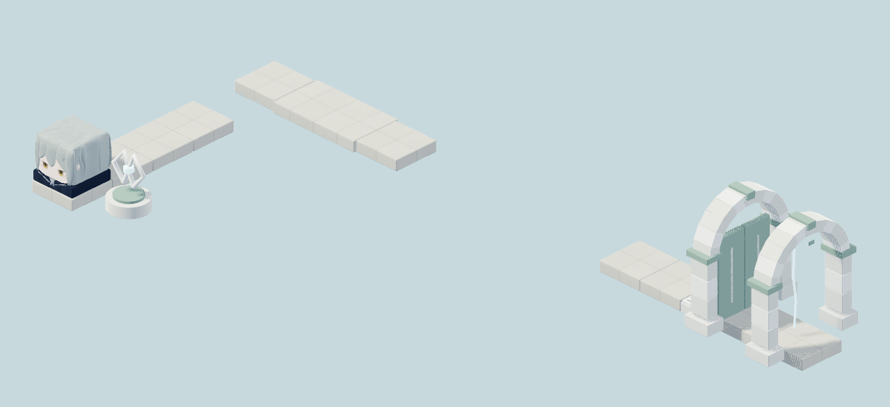

Surface · L01 既有预览LEVEL PREVIEW
此关尚无正式预览保留真实内容身份，先审核导航设计
L01
第一章
另一个世界
示例状态 · 已完成
Reset 随时重新开始视角 · 世界 · 六面姿态

示例状态 · 已完成
这里将显示当前关卡提供的情境提示。
旅程仍在这里，
等待下一次观察。
待审核的界面设计与交互示意，非 Godot 运行画面；不读写游戏存档，不代表正式美术替换、Gameplay、三尺寸或真人 QA 通过。表里主题使用既有批准美术参考；A2 候选未接入。设计规格